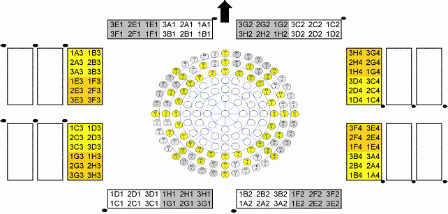
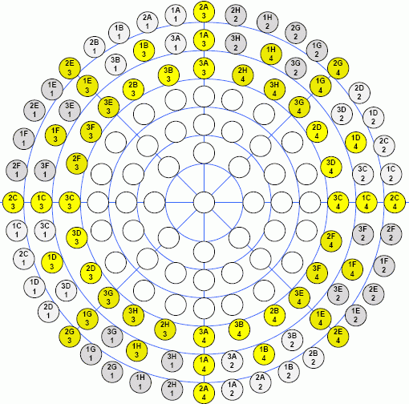

RF interface port assignment for Direct-Probe
This topic provides the pogo mapping scheme and port assignment for the Direct-Probe™ RF interface solution.
- Only center 24/48ports are pre-populated
- Populate assigned side wing ports as needed
- Unassigned side wing locations are for custom use (i.e. 10MHz clock)
The arrow in the graphic indicates the direction of the arrow marked on the base plate with the view looking into the tester.


Functional changes
- Introduced in SmarTest 6.5.4